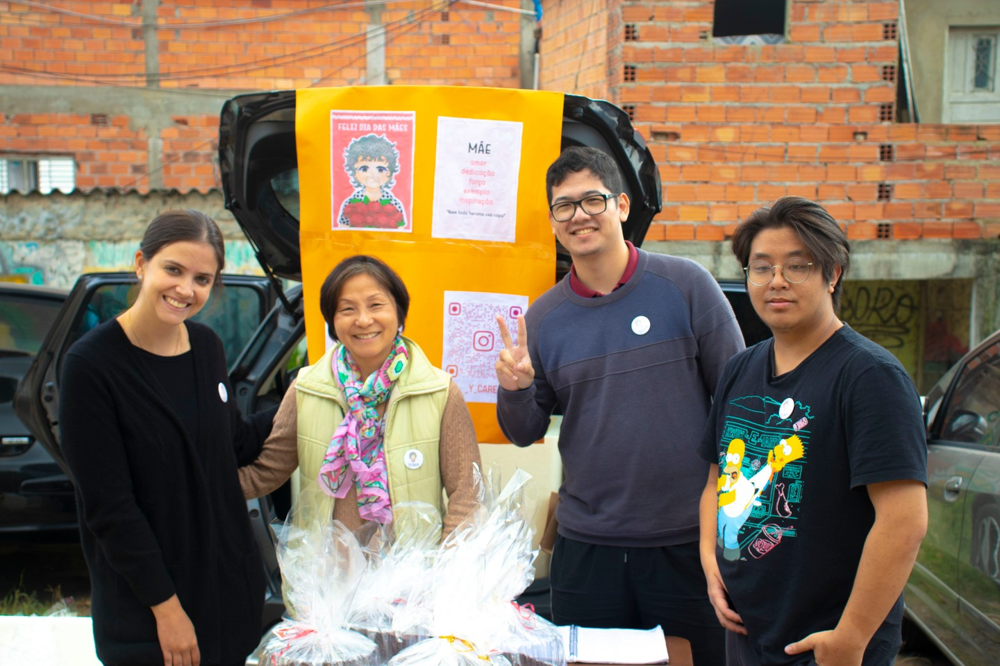

Sobre a YCare
O Instituto Ycare atua diretamente no amparo a famílias em situação de vulnerabilidade, oferecendo assistência social pautada no legado de cuidado de nossa inspiradora, Dona Yolanda.
Através de visitas e diálogos anuais, conhecemos as necessidades de cada família para agir de forma eficaz e humana, honrando as histórias de luta e resiliência que encontramos em nossa comunidade.
